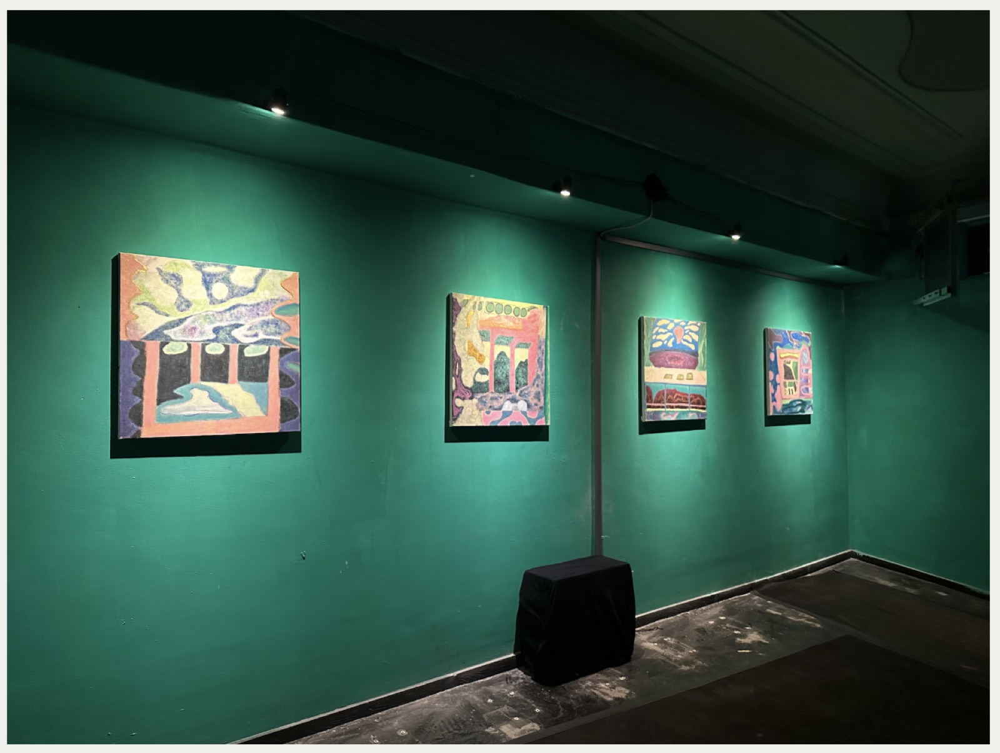
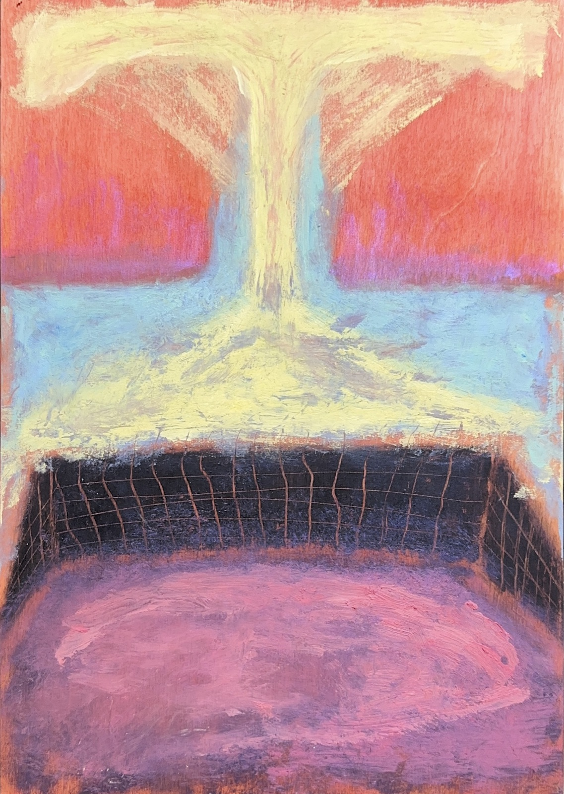
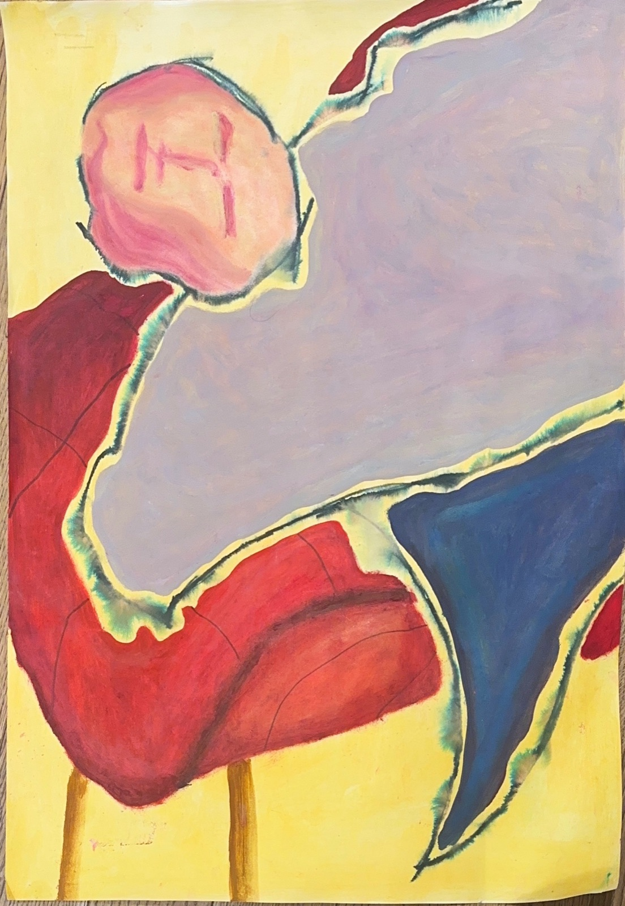
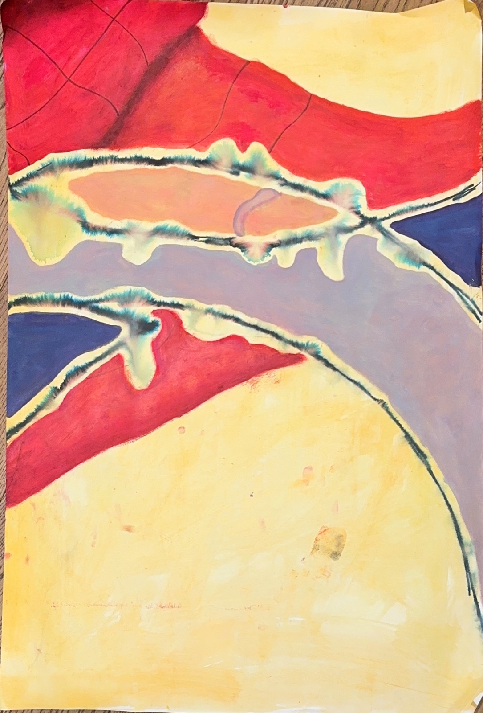
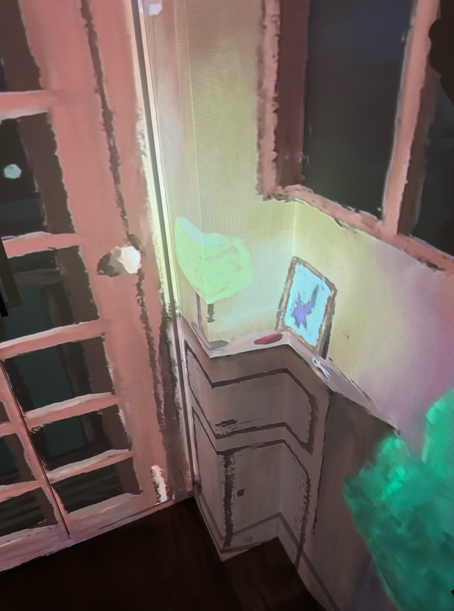
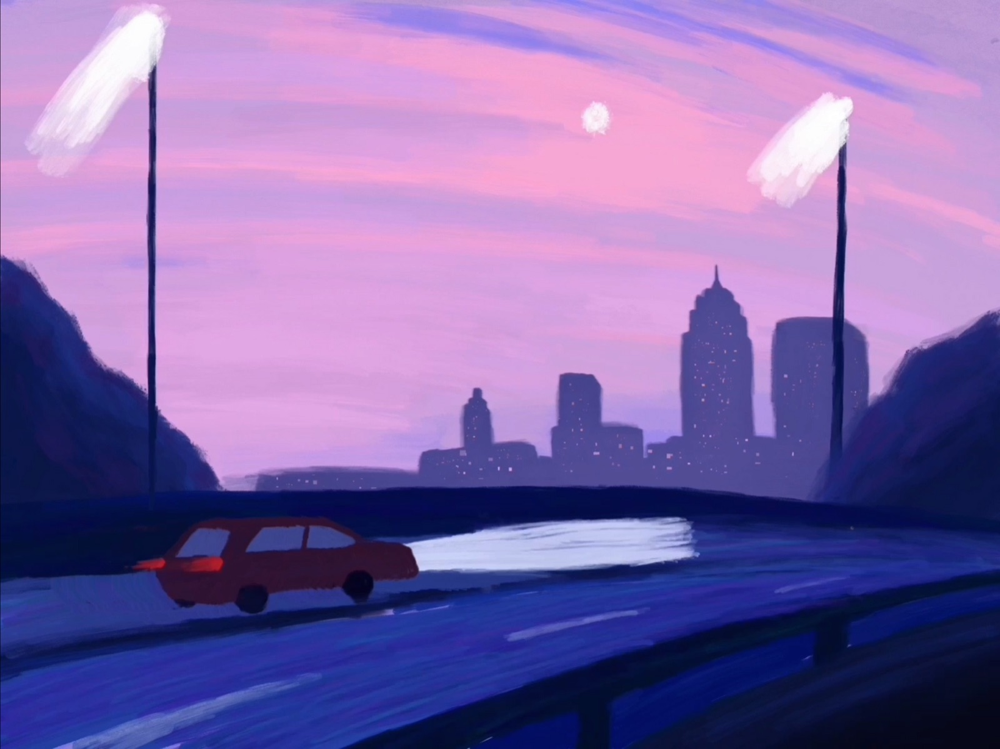

01
Gildrift
2025Painting / Moving image
INDEPENDENT PRACTICE · LONDON
Painting and new media exploring memory, imagination and the spaces of everyday life. Through a dialogue between media, Jinrong Kuang creates immersive experiences that invite us to reconsider how we see and understand our surroundings.
Explore selected work ↓
Painting / Moving image

Painting / Virtual reality

Works on paper

Painting / Works on paper


Works on paper

Projection / Installation

Painting

Digital painting / Video

Installation

Animation / Film

Painting
Exploring memory, perception and everyday spaces through images and immersive experiences.
More about my practice ↗